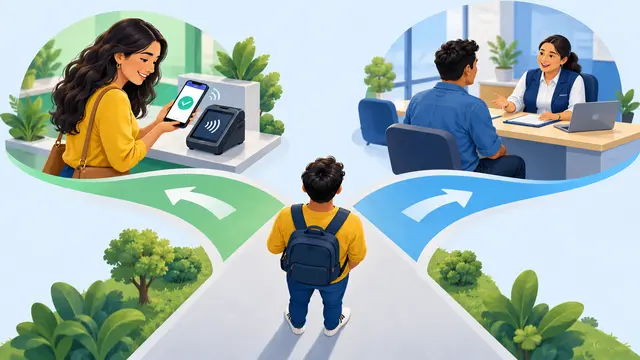
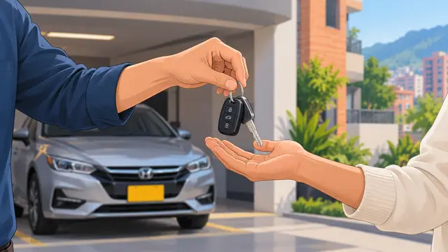
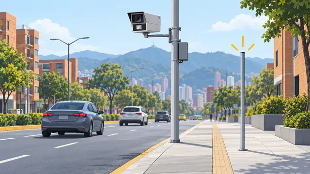
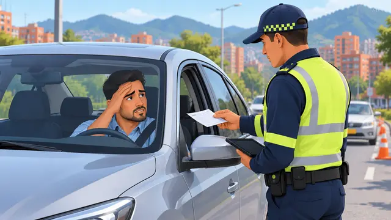

Por cámara o por un agente: del primer día al cobro.
La foto muestra la placa, no a la persona que manejaba.
La cámara debe estar autorizada por la Agencia de Seguridad Vial y tener un aviso visible antes de llegar a ella.
El agente le entrega el comparendo en la calle. Ese mismo día empieza a correr el reloj, con los mismos plazos que una fotomulta.
Revise lo que firma. Si no está de acuerdo, puede pedir audiencia.
Llega por correo certificado a la dirección que tiene registrada en el RUNT. Deben enviarlo en los 3 días hábiles siguientes.
Si no lo encuentran, lo publican en la página de tránsito y cuenta como si lo hubiera recibido. Mantenga su dirección del RUNT al día.
Mueva la barra y mire qué puede hacer cada día. Son días hábiles: no cuentan sábados, domingos ni festivos. Al final de la barra empiezan los intereses.
Ejemplo con una multa común. El descuento exige hacer el curso de seguridad vial. Los intereses usan una tasa aproximada de 25 % al año; la tasa real cambia cada mes.

Haga el curso y pague pronto. Paga menos.
Pida audiencia en los primeros 11 días hábiles. No pague antes.
La Corte Constitucional dijo que no basta con ser el dueño: tránsito debe probar quién manejaba.
Toque el que se parezca a lo que le pasó. Puede ser en persona o virtual.
Otro carro anda con una placa igual a la suya (“le gemelearon la placa”).
LLEVE
Prestó el carro o lo maneja alguien más.
LLEVEVendió el vehículo pero sigue a su nombre en el RUNT.
LLEVE
LLEVE
Si no le avisaron bien, puede pedir que la anulen.
LLEVESi no va en unos 30 días, deciden sin usted. Precio completo.
Aparece en el SIMIT: no puede renovar la licencia ni vender el vehículo.
Cada mes suma intereses de mora.
Pueden embargar cuentas, salario o bienes.
Una multa prescribe a los 3 años si tránsito no inicia el cobro. Si ya lo inició, el tiempo vuelve a empezar.
Información general según el Código Nacional de Tránsito y la ley de fotodetección. No reemplaza la asesoría de un abogado.